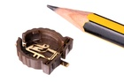

CR1220 SMD Battery Holder - BHS1220
Summary
Name: CR1220 SMD Battery Holder
ID: BAHO-CR1220-X-SMDS-01
Hex ID: BHS1220
WebPage: https://github.com/oomlout/oomlout-OOMP/wiki/BAHO-CR1220-X-SMDS-01
Short URL: http://oom.lt/BHS1220
Revision History: https://github.com/oomlout/oomlout-OOMP/blob/master/parts/BAHO-CR1220-X-SMDS-01/
| Type |
Size |
Color |
Description |
Index |
BAHO
Battery Holder |
CR1220
CR1220 |
X
|
SMDS
SMD |
01
|
Images

About
A surface mount battery holder for a CR1220 lithium ion button cell. Commonly used as a battery backup for on board clocks.
Specifications
| Info |
Value |
| Type |
Battery Holder |
| Size |
CR1220 |
| Description |
SMD |
| Width |
15.06 mm |
| Height |
4.10 mm |
| Length |
15 mm |
| Number of Pins |
2 |
Extra Details
Spotted a mistake, want to add more? Let us know oomp@oomlout.com
All images and resources are licensed [CC BY-SA] unless otherwise stated (ie. the datasheets)